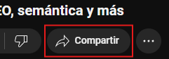
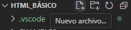
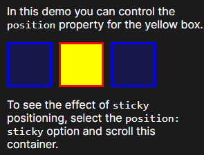
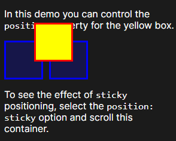
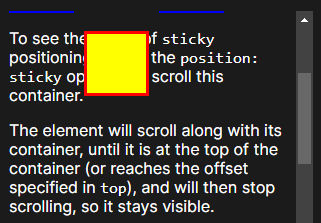

Introducción
En el lenguaje HTML se pueden usar tanto mayúsculas y minúsculas y estas serán reconocidas igual, pues la sintaxis no diferencia entre ese tipo de caracteres.
Ejemplo: funcionan igual al pero se recomienda usar minúsculas,ya que es más cómodo y ordenado.
Uso de VS Code
Hay dos formas de usar Visual Studio Code: descargando el programa o accediendo a la versión online
Algunos atajos que son recomendables usar para facilitarse el trabajo son
- ctrl + s → guardar.
- alt + clic derecho → tener varios puntos desde donde escribir.
- mayus + flechas → seleccionar una parte del texto sin usar el ratón.
- ctrl + z/y → retroceder/adelantar
Extensiones:
- Live Preview → Es una extensión que te permite ver el aspecto de la página web a tiempo real cuando vas modificándolo, al lado del código que vas escribiendo, sin la necesidad de ir al navegador. Igualmente es recomendable verlo en varios navegadores porque entre uno y otro puede haber pequeños detalles que cambien.
- Spanish Language Pack for VSCode → en caso de que estés usando la versión de escritorio y no te guste tener el programa en inglés, puedes descargar esta extensión para tenerlo en español.
- Error lens → Te permite ver los errores que tienes en el código de forma inmediata, mostrando en la línea que es lo que falta.
Creación de un documento HTML y su comportamiento
¿Por qué se usa intex.html?
El archivo index.html es un estándar establecido que facilita la navegación y la gestión de sitios web. Los servidores web tratan index.html como la página predeterminada en un directorio, lo que permite que los usuarios accedan fácilmente a la página principal sin tener que escribir el nombre completo del archivo en la URL. Resumidamente, el index es necesario a ser reconocido y el .html para que te reconozca el codigo.
Etiquetas principales
| <p> → Para texto. |
<br> → Para realizar saltos de línea. |
<h1-h6> → Para títulos, van de más relevante (h1) a menos relevante (h6). |
| <div> → Para crear un contenedor. |
<table> → Crea una tabla. |
<hr> → Hace una línea horizontal en la página. |
Cabecera HTML5 y su estructura
Las cabeceras de HTML5 dentro de la etiqueta <head> proporcionan información esencial sobre la páginaweb. Incluyen el DOCTYPE para indicar que es un documento HTML5, el charset para especificar lacodificación de caracteres (UTF-8), y el viewport para adaptar el diseño a dispositivos móviles. También permiten definir el título, vincular hojas de estilo o iconos como el favicon, y garantizar la compatibilidadcon navegadores más antiguos. Estas cabeceras mejoran la accesibilidad, SEO y experiencia de usuario.
En el siguiente bloque se puede ver una muestra:
<!DOCTYPE html>
<html lang="en">
<head>
<meta charset="UTF-8">
<meta name="viewport" content="width=device-width, initial-scale=1.0">
<title>My WEB</title>
</head>
<body>
</body></html>
Etiquetas para crear tablas
Hay más pero estos son los más esenciales para una tábla básica
Estructura del HTML
La estructura en HTML es bastante importante para mantener un orden y para que tanto nosotros como los demás puedan saber en qué parte del código estamos.
Aunque no sea obligatorio, pues hay páginas que usan muchos <div> o <span> para estructurar las páginas, el abuso de estos pueden dar a un código sucio y desordenado que para algunos podría llegar a ser ilegible, y por ello es mejor usar estas etiquetas sintácticas.
Las etiquetas sintácticas para estructurar el HTML son:
<main> → Establece el contenido principal de esa página en concreto y es la que indicará el contenido cambiante en función de la web.
<section> → Contiene una sección del contenido de la web
<article> → Contiene una información concreta de una sección, que tenga elementos replicables de forma independiente.
<aside> → Se utiliza para información que NO resulta de gran importancia, pero que igualmente se añade al tener relación con la información principal.
<header> → Ahí es donde se encuentra el título de una sección, artículo, etc.
<nav> → Se utiliza para separar un conjunto de enlaces.
<figure> → Se usa para elementos como imágenes o videos que son independientes de otros elementos de la página.
<blockquote> → Para añadir citas en bloques.
<pre> → Para crear bloques dedicados a mostrar código.
Ejemplo visual
 imagen provisional
imagen provisional
Listas ordenadas <ol> y desordenadas <ul>
La etiqueta <ul> es un elemento de bloque utilizado para definir listas desordenadas (aquellas en las que el orden de los elementos no es relevante) mostradas con puntos a su izquierda, y la etiqueta <ol> es uno que define listas ordenadas, enumeradas del uno hasta el número de elementos que hayan.
Los elementos en ambos tipos de la lista se definen con el elemento <li>.
El elemento ul puede anidarse dentro de otro elemento ul para crear listas multinivel. Además, puede combinarse con el elemento ol para crear listas ordenadas y desordenadas mixtas.
See the Pen
Ejemplo by Laurinto (@Laurinto)
on CodePen.
Insertar videos de youtube mediante <iframe>
1. Busca el video que te interesa poner en tu HTML y busca la sección "compartir" que hay debajo del título del video.

2. Selecciona el apartado de "Insertar" para ver el iframe con la URL del video específico.

3. Copia el código destacado que se muestra en la imagen, es lo esencial que hace que se pueda mostrar el iframe en la web.

<summary> + <details>
Se usa para crear secciones en las que al dar clic en el título <summary> de la sección, la información que se encontraba oculta, se muestra.
See the Pen
Ejemplo summary by Laurinto (@Laurinto)
on CodePen.
Imágenes y GIFs con <img>
Sintaxis: <img src="foto.png" alt=”descripcion”>
La etiqueta  no se cierra porque es un elemento vacío (no tiene contenido en su interior), solo sirve para mostrar una imagen mediante el atributo src (source), que indica la ubicación de la imagen,y el parametro alt es para darle una descripcion a la imagen para perosnas que tengan alguna discapcidad visual, o para el caso en el que la imagen estér rota.
no se cierra porque es un elemento vacío (no tiene contenido en su interior), solo sirve para mostrar una imagen mediante el atributo src (source), que indica la ubicación de la imagen,y el parametro alt es para darle una descripcion a la imagen para perosnas que tengan alguna discapcidad visual, o para el caso en el que la imagen estér rota.
Creación del archivo y enlace de CSS
Creación del archivo CSS en VS Code
Al abrir la carpeta donde se guardarán los archivos dentro de VS Code, tendremos que darle al apartado de "nuevo archivo..." para crear una nueva hoja de código.

Posteriormente, le asignamos un nombre con la extensión .css que se relacione con el HTML.

Link que dirige hacia el CSS
Este link es un redireccionamiento a una hoja de estilos para darle un diseño más bonito, y se situará en la cabecera HTML (<head>).
La sintaxis sería la siguiente:
<link rel="stylesheet" href="estilo.css">
En este caso la hoja de estilos debería llamarse estilo.css, que, a diferencia del nombre del HTML, aquí no importa el nombre que le des al link siempre que tenga el mismo nombre que archivo
Aunque también se puede insertar el CSS en el propio HTML con <style>, pero por temas de organización es mejor tenerlo a parte.
Clases y formato
A la hora de estilar una página, se suele plantear un aspecto predeterminado para todos los elementos y usarlo de plantilla para toda la página, es por eso que se usan las etiquetas creadas en el CSS.
Pero, hay veces donde necesitamos que elementos concretos tengan un aspecto distinto, y por eso necesitaremos colocar unos atributos llamados class, al que le pondremos un nombre en concreto para que en el CSS pueda identificar cuándo aplicar esas características concretas.
Para eso, en el HTML se escribe class=”nombre-del-atributo” dentro CUALQUIER etiqueta, mientras, en el CSS se pone un .nombre-del-atributo
|
Sin clases |
Con clase |
| HTML |
<div></div> |
<div class="clase"></div> |
| CSS |
div{} |
.clase{} |
Ejemplo:
See the Pen
Ejemplo del box model by Laurinto (@Laurinto)
on CodePen.
Box model
Comprende cómo funciona el modelo de caja, que incluye el contenido, padding, border y margin, ya que es esencial para el diseño, en resumen estos parametros le dan forma a nuestros elementos dentro del html.
- width: 300px; → Ancho del contenido.
- height: 150px; → Alto del contenido.
- margin: 15px; → Margen entre la caja y el resto de elementos de la página.
- border: 2px solid red; → Borde de la caja.
- padding: 20px; → Espaciado entre el borde de la caja y el texto.
Se puede trabajar con distintas medidas y no solo con pixeles, tanto exactas como los cm, o relativas como el porcentaje (%); ejemplos son de las muchas más que hay.
Ejemplo:
See the Pen
Ejemplo del box model by Laurinto (@Laurinto)
on CodePen.
La mejor forma de comprender esta función es entrando a una página web cualquiera, dar clic derecho y seleccionar el apartado de "Inspeccionar". Verás a la derecha una sección, en la que aparece todo el código fuente de la página junto a un recuadro de una sección llamada "Computed", a la derecha o debajo del código HTML (en función del tamaño de la pantalla que tengais), que te señalará las distintas partes del box model.
Posiciones
Nuestra propiedad posición, tiene 5 valores:
position: static; /*estática*/
position: relative; /*relativa*/
position: absolute; /*absoluta*/
position: fixed; /*fija*/
position: sticky; /*pegada*/
Para mover nuestras cajas, usaremos cuatro propiedades que nos permitirá mover el elemento:
- top: 0; → Posiciona el elemento lo más arriba posible.
- bottom: 0; → Posiciona el elemento lo más abajo posible.
- left: 0; → Posiciona el elemento lo más a la izquierda posible.
- right: 0;→ Posiciona el elemento lo más a la derecha posible.
Cuanto más valor (en forma de px, cm, %...) le demos a esas propiedades, más alejado de esa posición estará.
Position static
Es el valor por defecto de todo elemento, hará que las propiedades top, bottom, left y right no tengan valor.
No tiene casos de uso a la hora de declararlo en el CSS.

Position relative
Este elemento estará infuido por las propiedades top, bottom, left y right, y también vendrá influido por las propiedades de la página (todos los contenedores que tenga anidado).
Si te mueves de la zona, el elemeno no te seguirá y se quedará en la misma posición en relación a la página.

Position absolute
Este tipo de posición funciona de forma similar a relative, pero NO viene influido por las propiedades de la página, solo únicamente del contenedor más cercano (su primer padre o antecesor) que tenga, si no, pues del contenedor raiz (html o body).

Position sticky
Esta posición funciona en base a un contenedor en específico, a si que, después de desplazarnos (scrollear) a cierto punto de nuestra pantalla, este valor se quedará fijado al final de un contenedor y no se moverá a no ser que volvamos a la parte de la página en la que se encuentra el contenedor.

Position fixed
Este valor fijará la posición de tu elemento en la pantalla incluso cuando te desplaces en el navegador fuera de un contenedor especifico.
|
static |
relative |
absolute |
sticky |
fixed |
| ¿Se ve afectado dentro de las propiedades (top, bottom,etc.)? |
No |
Sí |
Sí |
Sí |
Sí |
| ¿Se ve afectado por sus etiquetas padre? |
- |
Sí |
No, solo por body/html |
Sí |
No, solo por body/html |
| ¿Se mueve? |
No |
No |
No |
Solo dentro de su etiqueta padre |
Sí |
Ejemplo:
See the Pen
Ejemplo positions by Laurinto (@Laurinto)
on CodePen.
Practica con el ejemplo:
Copia el código que se encuentra en el enlace, empieza a jugar con el código probando las distintas posiciones y propiedades que hay, y describe en un documento a parte lo que creees que ha cambiado.
No pasa nada si vuestro código empieza a hacer cosas extrañas, el objetivo es que llegueis a entender el porqué las hace, el resultado es lo de menos.
Destacar elementos con “:hover”
: hover es una pseudo-clase que se activa cuando pasamos el ratón en un elemento. Su principal uso es el de destacar cosas que son clicables. Su forma de usarse en CSS es declarándose junto a la etiqueta que quieres que la gente pase el ratón.
En esta tabla de ejemplo vemos en el código que cuando pasemos el cursor por encima el div sera de color rojo
| HTML | CSS |
| etiqueta :hover{ propiedad que le quieras dar a la etiqueta } | .clase-de-la-etiqueta :hover{ propiedad que le quieras dar a la etiqueta } |
| div { color: blue;} | div :hover{color: red;} |
See the Pen
Ejemplo ":hover" by Laurinto (@Laurinto)
on CodePen.
Animaciones
Sabiendo la propiedad :hover, cabe destacar que existe la opción de destacar estos elementos mediante transiciones que pueden durar un tiempo definido. La principal forma de hacerlo es mediante la propiedad.
He aquí un ejemplo con el ejemplo de :hover
See the Pen
Ejemplo animación transition by Laurinto (@Laurinto)
on CodePen.
Creación de botones con <button>
<button> es una etiqueta que se usa para la representación de un botón. Al mostrarse sin estilo tiene una presentación así:
See the Pen
Ejemplo <button> by Laurinto (@Laurinto)
on CodePen.
Por defecto tendrá su propio hover, pero a la hora de empezar a darle unas propiedades en específico ya desaparecerá.
Formularios con <input>, <label> y <textarea>
La etiqueta <label> representa el título de para un elemento en una interfaz de usuario. Se usa junto a <input> y <textarea> para que forme distintos tipos de elementos en una página web, tanto a nivel de programación y de visualización.
<input> es una etiqueta que se usa para crear diversos controles interactivos. Cada una de estos controles se pueden declarar su forma poniendo type=”...” dentro de la etiqueta.
He aquí unas muestras de las posibilidades que se le puede dar:
See the Pen
Ejemplos <label> + <input> + <textarea> by Laurinto (@Laurinto)
on CodePen.
La etiqueta <textarea> tiene un mismo fin que algunos tipos de input, pero la parte que diferencia esta etiqueta con la otra es que se trata de un área de texto extensible cuyo fin único es insertar texto independientemente de la temática.
See the Pen
Ejemplo <textarea> by Laurinto (@Laurinto)
on CodePen.
{kind=link}